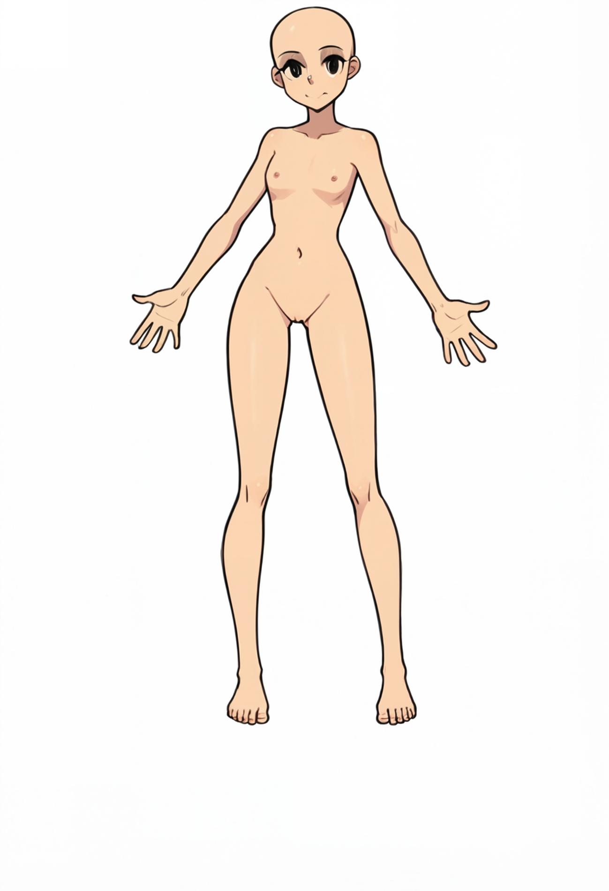

Automated desktop review
The artifact is a generated report with comments anchored to blocks. The reviewer needs command output for any safety claim.
Risk finding
The sway reload claim needs the exact command and output before approval.

123The artifact is a generated report with comments anchored to blocks. The reviewer needs command output for any safety claim.
The sway reload claim needs the exact command and output before approval.
| Artifact | Type | Anchor | State | Replies | Age | Latest comment | |
|---|---|---|---|---|---|---|---|
| IMG-2048-v7 | Image | Region pin A | Open | 3 | 2d | Right cheek contour breaks at the shade boundary. | |
| GAL-113-check | Gallery | Item 04 | Needs reply | 5 | 19h | Fixed framing but lost the fabric detail from pass two. | |
| REP-77-summary | Report | Risk table row 6 | Open | 1 | 17h | Mitigation names a tool but not the human owner. | |
| SRC-router.ts | Code | Line 118 | Held | 2 | 11h | Keep this branch until the fixture covers a missing artifact type. | |
| REP-80-audit | Report | Finding block 3 | Open | 2 | 6h | Evidence says verified, but no command output is attached. | |
| GAL-120-grid | Gallery | Item 09 | Open | 6 | 3h | The item reads like a style exploration, not a utility mock. |